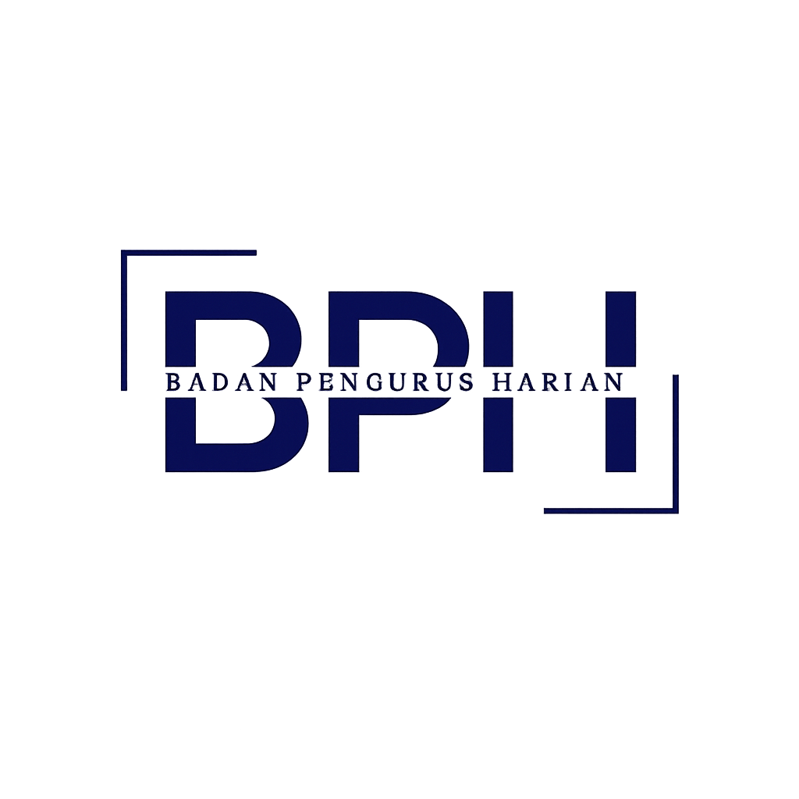

Badan Pengurus Harian
BPH (Badan Pengurus Harian) adalah inti kepemimpinan OSIS yang mencakup Ketua OSIS, Wakil Ketua, Sekretaris, dan Bendahara. Mereka bertugas untuk mengawasi dan membantu jalannya organisasi agar tetap efektif dan sesuai dengan aturan yang berlaku.
Struktur Organisasi
Struktur kepengurusan inti BPH.
Ketua BPH OSIS
M. Al Fatih Segara Anak H
Wakil Ketua
M. Fatullah Kinan Abbassy
Sekretaris 1
M.Shalahudddin Al Ayyubi
Sekretaris 2
M. Fikri Fadillah
Bendahara 1
M. Fathaan Putra Wibowo
Bendahara 2
Reza Ahsandra Savuwan